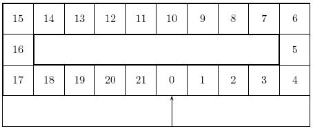
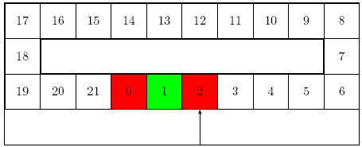
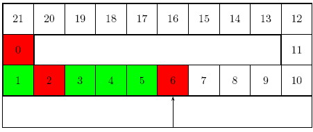
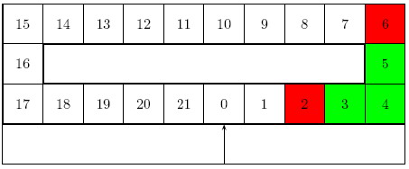
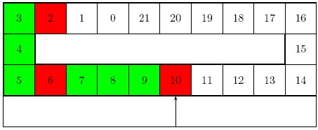
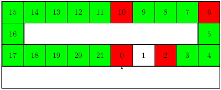

Home Page
F.A.Qs
Statistical Charts
Past Contests
Scheduled Contests
Award Contest
| Online Judge | Problem Set | Authors | Online Contests | User | ||||||
|---|---|---|---|---|---|---|---|---|---|---|
| Web Board Home Page F.A.Qs Statistical Charts | Current Contest Past Contests Scheduled Contests Award Contest | |||||||||
|
Language: On Storing Clothes
Description In the laundry next to my flat, clothes are stored on coat hangers that are put on hooks fixed on a circular rail moved electrically by a computer. Hooks are numbered so that finding a cloth is easy. The rail moves in front of a mark.
Details We model the rail as an array of dimension N , referenced in a circular way, that is indices are to be considered modulo N . When a batch of n clothes must be stored, the launderer types the number n on a keyboard. The computer then looks for the first location of n + 2 free hooks, from the current position of the rail to the right, yielding zone k..k + n + 1 (all indices considered modulo N ). Once this is done, the rail moves so that hook numbered k + n + 1 arrives on the mark, and the launderer puts the n clothes on the hooks k + 1..k + n . Hooks k and k + n + 1 are not used to store clothes, but are used as ``separators" between batches of clothes. The launderer then gives the ticket number k to the customer. Hooks used to hang the clothes of some customer are assigned to the customer, even during the actual cleaning of the batch of clothes. When the customer comes back with the ticket number k , the launderer types k on the keyboard and the computer makes the rail moves so that the separating hook k of the corresponding batch is in front of the mark. The launderer takes the batch back (during this operation, the rail does not move) and gives it back to the customer. When a cloth is handed back to a customer, the corresponding hook is then free. Note that, when both its left and right neighbors are empty, a separating hook can be used for any purpose (either to hang a cloth or to become a separating hook again). The aim of the program is to model deposits and withdrawals of batches of clothes. Input The input has the following format. The first line contains the number N of hooks, ( 1<=N<=300 ). We then have the number l of lines in the file after the current one. Follow l lines with two different possible formats. The first one is:
D n to deposit n clothes. The second one is: W k to indicate that clothes corresponding to ticket k must be withdrawn ( 0<=k < N ). Output When the customer makes a deposit of clothes, the program looks for an empty place for the whole batch. If this cannot be found, the program's output is
No space left, please come back later. If ticket k can be issued, the program's output is The launderer gives ticket k . When ticket k is given back, the program's output is The launderer gives back batch k . and all hooks used to hang the clothes of the corresponding customer are made free. Moreover, a separating hook of a batch that has been removed is also made free if both its right and left neighbors are free. Whenever hooks h,..., h + q become free, the program should output i is freed. for all i between h and h + q . We assume that at the beginning of the reading, the rail is empty and that hook 0 is in front of the mark. Only clothes that have been deposited can be withdrawn. Sample Input 22 5 D 1 D 3 W 0 D 3 D 11 Sample Output The launderer gives ticket 0. The launderer gives ticket 2. The launderer gives back batch 0. 0 is freed. 1 is freed. The launderer gives ticket 6. The launderer gives ticket 10. Hint Sample explanation: In that case, N = 22 . The starting position looks like
 We first read ``D 1" and the program looks for a zone with three hooks free in a row. Since the rail is empty, we select hooks 0, 1, 2 and we store the cloth on hook 1 (hooks 0 and 2 are separators and remain empty). The rail moves and stops when 2 is in front of the mark. So the position is exactly  A ticket is given and we write ``The launderer gives ticket 0." in the output file. Next we read ``D 3" and we look for an empty zone with 5 hooks, this corresponds to a zone starting at hook 2 (used as a separator), which enables us to store the three clothes on hooks 3, 4, 5; which brings hook 6 in front of the mark:  We write ``The launderer gives ticket 2." in the output file. When the customer asks for ``W 0" the rail comes back to hook 0  and we write ``0 is freed." and ``1 is freed." in the output file. When we get ``D 3" clothes are stored on hooks 7, 8, 9 (6 and 10 are separators)  and we write ``The launderer gives ticket 6." in the output file. The last deposit is ``D 11" which yields to  and we write ``The launderer gives ticket 10." in the output file. Source |
[Submit] [Go Back] [Status] [Discuss]
All Rights Reserved 2003-2013 Ying Fuchen,Xu Pengcheng,Xie Di
Any problem, Please Contact Administrator